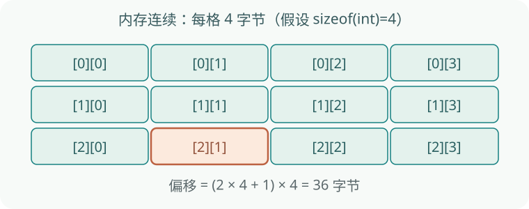
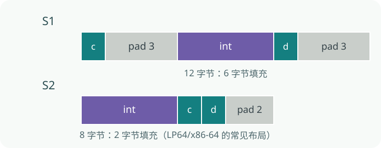

CSAPP · 07 / DATA LAYOUT & SAFETY
一个数组下标，最后变成了哪个地址？
数组、结构体和联合体让我们按名字组织数据；CPU 却只看地址与字节。本章从行优先布局推导地址公式，再看字段对齐如何产生 padding，最后解释为什么有界输入才是缓冲区安全的第一道防线。
01 · 数组下标的本质，是基址加字节偏移
设一个数组以地址 base 开始，元素类型 T 的大小为 sizeof(T)。对合法下标 i，&a[i] 的地址是 base + i × sizeof(T)，而不是简单加 i 个字节。
long a[4] = {10, 20, 30, 40};
long x = a[2]; /* 常见 LP64 平台 sizeof(long) == 8
因此读取基址 + 16 的 8 字节 */
/* 若 a 的基址位于 %rdi：
movq 16(%rdi), %rax
是一种可能的读取方式；真实寄存器分配由编译器决定。 */二维数组 int matrix[3][4] 在 C 中是“3 个元素组成的数组，每个元素又是 4 个 int 的数组”。它采用行优先布局：一整行的四个 int 连续存储，随后紧跟下一行。

i 行前面有 i×4 个元素，列内还要走 j 个元素。示例限定 sizeof(int)=4。数组与指针不是完全同义：在多数表达式中数组会转换成指向首元素的指针，但 sizeof a（对真正数组对象）取得整个数组的大小；函数形参 int a[] 会调整为指针类型，此时 sizeof a 只得到指针的大小。
02 · 结构体大小为什么不是字段大小简单相加？
字段不仅占有字节，还可能有对齐要求。编译器保留声明的字段顺序，但为了满足每个成员的对齐，可能在字段间及末尾加入填充。
struct S1 { char c; int i; char d; };
struct S2 { int i; char c; char d; };
/* 在常见的 x86-64 ABI + 4 字节 int 对齐下：
S1: c@0, i@4, d@8, sizeof == 12
S2: i@0, c@4, d@5, sizeof == 8 */
可用标准 C 的 offsetof 和 sizeof 测出当前平台的实际布局，而不需要从示意图猜：
#include <stddef.h>
#include <stdio.h>
struct S1 { char c; int i; char d; };
int main(void) {
printf("size=%zu; i=%zu; d=%zu\n",
sizeof(struct S1),
offsetof(struct S1, i),
offsetof(struct S1, d));
return 0;
}不是越紧凑越好：重排字段可能降低内存占用，但更改公共 ABI、序列化格式或与硬件共享的布局会破坏兼容性。不要无条件套用 packed；未对齐访问在不同架构上可能更慢甚至发生异常。
03 · 联合体复用存储，但不能忽略类型语义
union 的成员共享同一块存储区，整个联合体需要满足最大成员的尺寸和对齐，必要时仍会有额外填充；因此不能把它的大小简单写死为“最大字段大小”。
union Number {
unsigned u;
float f;
};
/* 观察 float 的位表示时，按对象字节复制更容易写出
在语言规则上可解释的代码： */
#include <stdint.h>
#include <string.h>
void examine_float(void) {
float value = 1.0f;
uint32_t bits = 0;
_Static_assert(sizeof(uint32_t) == sizeof(float),
"this demo requires 32-bit float");
memcpy(&bits, &value, sizeof bits);
/* bits 现在包含 value 的对象表示 */
}上面的 memcpy 仅复制对象表示，并不假定所有 C 平台都使用 IEEE 754 二进制32。使用不同类型的联合体成员解释同一组字节，需要区分语言标准、编译器扩展和对象表示约束。
04 · 越界不是“踩到下一格”，而是未定义行为
C 数组提供连续布局，却不自动检查每次访问是否越界。对 char buf[8] 来说，作为 C 字符串时最多可存 7 个普通字符，最后一个字节留给 '\0'。如果输入长度不受限制，写出数组边界就会造成未定义行为；结果可能是崩溃、静默损坏，或者在特定内存布局下影响控制数据。
#include <stdio.h>
int main(void) {
char buf[8];
if (fgets(buf, sizeof buf, stdin) == NULL) {
return 1;
}
/* fgets 最多读取 sizeof(buf)-1 个字符，并在成功时补 '\0'。
注意：若输入行太长，它只读取前一段；生产代码必须检测
是否读到换行并决定丢弃余下输入或拒绝该行。 */
puts(buf);
return 0;
}这里刻意不用被 C11 删除的 gets 来演示崩溃。安全的核心是为每次写入提供可验证的容量上界，而不是事后猜测越界碰巧覆盖了哪个栈槽。实际栈帧可受对齐、局部变量消除、栈保护及优化影响；“第 N 字节必然覆盖返回地址”的说法是不可靠的。
字符串复制也应检查截断：strncpy 并不保证输出在截断时以 NUL 结尾，不能不加条件地当作 strcpy 的安全替代。用 snprintf 时，同样需要检测返回值是否超过或等于缓冲区容量。
#include <stdio.h>
#include <stddef.h>
int copy_name(char *dst, size_t capacity, const char *src) {
/* 调用者必须传入 dst 实际可写的字节容量 */
if (!dst || !src || capacity == 0) return -1;
int n = snprintf(dst, capacity, "%s", src);
if (n < 0 || (size_t)n >= capacity) return -1;
return 0; /* 完整写入并含 NUL 终止符 */
}05 · 安全边界：源头检查，再加纵深防御
现代系统有多层防护，但没有哪一层能把越界写入变成正确行为：
- 有界 API 与长度检查：以实际目标对象容量为依据，给字符串预留 NUL 字节；处理长行、截断与错误。
- 栈保护（stack protector）：某些函数会布置金丝雀并在返回前检查，帮助发现特定栈写坏；不是所有函数都一定受保护，更不阻止所有越界。
- ASLR：随机化部分地址空间布局，提高预测地址的难度；不修补漏洞本身。
- 不可执行数据页（NX/XD）：阻止在标记为不可执行的页面直接取指；并不意味着任意控制流破坏都被排除。
- 测试与审计：地址检查器、未定义行为检查器、模糊测试与代码评审帮助尽早找出根因。
把包含上述代码的独立 C 程序保存在 layout.c 或 input.c，可在支持这些参数的 Linux/GCC 或 Clang 环境试验：
cc -std=c11 -Wall -Wextra -O1 \
-fsanitize=address,undefined -fno-omit-frame-pointer \
input.c -o input-check
./input-check
# 对发行构建另行评估平台支持：
cc -O2 -fstack-protector-strong -D_FORTIFY_SOURCE=2 \
input.c -o input-hardened两个构建命令用途不同：sanitizer 主要用于调试/测试，保护选项用于部署前评估；实际效果与 libc、编译器、链接方式和平台相关。这里只提供安全输入示例，不构造利用载荷。
查证与下一步
到这里可以用一条链贯穿本系列：源语言表达式 → 地址计算 → 内存访问 → 可能的边界失效。对数组与栈都应先推导条件与约定，再查看机器码；这比背诵某种固定内存图更可靠。
- CS:APP 第三版官方资源：程序机器级表示、数据布局与存储器基础。
- System V AMD64 ABI：对齐、调用约定及平台范围。
- SEI CERT C STR31-C：字符串容量须容纳内容和 NUL 终止符，以及安全输入建议。
- GCC Instrumentation Options：地址检查器及栈保护编译选项。